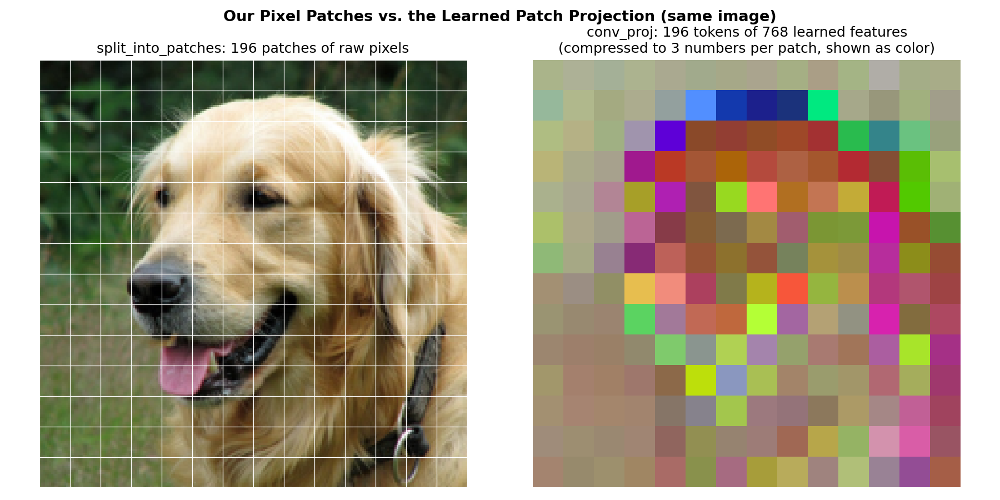

Objective
This project explores two pretrained models that sit at the center of modern multimodal learning: a Vision Transformer (ViT) trained for image classification, and CLIP, which learns a shared space for images and text. Neither model is trained or fine-tuned here. Instead, the focus is on understanding how each model processes an image, implementing the computations behind its predictions, and analyzing where its representations work well or struggle.
Part 1 looks inside ViT: how an image becomes a sequence of patch tokens, and what a classifier with a fixed set of 1000 ImageNet labels can and cannot answer. Part 2 uses CLIP for image-text matching and zero-shot classification, where I implement the similarity calculation myself, compare prompt wordings, and explore which images CLIP considers similar. Both parts use the same 20-image collection, so the two models can be compared directly.
How the Models Work
Vision Transformer (ViT)
A Vision Transformer applies the same transformer encoder used for text to images. Rather than sliding convolutional filters over the image, it cuts the image into fixed-size patches and treats each patch like a word in a sentence. Each patch is flattened and projected into an embedding, a learned position embedding is added so the model knows where the patch came from, and a special CLS token is placed at the front of the sequence. After the transformer layers, the final state of the CLS token is passed to a linear classification head, which scores the image against a fixed label set.
CLIP
CLIP (Contrastive Language-Image Pre-training) has two separate encoders: one for images and one for text. Both map their input into the same embedding space, and the model is trained so that an image and its caption land close together while mismatched pairs are pushed apart. Because the "labels" are just text, CLIP can classify an image against any set of descriptions written at test time, which is called zero-shot classification. The prediction is simply the text whose embedding is most similar to the image embedding.
Model Evaluation
For ViT, I evaluate top-1 and top-5 accuracy over all 1000 ImageNet classes, along with a confusion matrix and the predicted probabilities of the most and least confident examples. For CLIP, I evaluate zero-shot accuracy and confusion matrices for each prompt template. Since CLIP's probabilities saturate near 1.0 on these images, I also look at the cosine similarity of the correct prompt and the logit margin (the gap between the correct prompt and the best wrong one), which show differences that accuracy alone hides.
Image Collection
The collection has 20 images, with 4 images from each of 5 categories. Each category is an exact class name in ViT's ImageNet-1k label list, so the mapping between my labels and the model's output is one-to-one.
| Category | ImageNet index | WordNet ID | Image IDs |
|---|---|---|---|
| golden retriever | 207 | n02099601 | #0-#3 |
| banana | 954 | n07753592 | #4-#7 |
| church | 497 | n03028079 | #8-#11 |
| garbage truck | 569 | n03417042 | #12-#15 |
| parachute | 701 | n03888257 | #16-#19 |
All 20 images are photographs from Wikimedia Commons. I only used images under a public domain, CC0, CC BY, or CC BY-SA license so that they can be shared with the code and shown on this page with attribution. Each image had to be a real photograph in which the category object is the main, clearly visible subject. Within each category, I also chose different viewpoints, backgrounds, and conditions (a puppy and adult dogs, ripe and green bananas, a church at dusk, a partly hidden truck) so that not every example would be easy.
Of the 20 images, 9 are public domain or CC0, 6 are CC BY, and 5 are CC BY-SA. The author, license, and source page for
every image are listed in the Image Credits section and in images/credits.csv in the code.

Environment
| Item | Value |
|---|---|
| Part 1 checkpoint | torchvision vit_b_16, ViT_B_16_Weights.IMAGENET1K_V1 |
| Part 1 preprocessing | Checkpoint transform: resize 256 (bilinear), center crop 224, ImageNet mean/std normalization |
| Part 2 checkpoint | OpenAI CLIP ViT-B/32 (converted to float32 after loading) |
| Part 2 preprocessing | CLIP transform: resize 224 (bicubic), center crop 224, CLIP mean/std normalization |
| Packages | Python 3.11.15, PyTorch 2.12.0 (nightly, CUDA 12.8), torchvision 0.26.0 (nightly), CLIP 1.0, NumPy, pandas, matplotlib, seaborn |
| Device | NVIDIA GeForce RTX 5060 Laptop GPU (inference only) |
| Reproducibility | Fixed seed 42; images stored locally; image embeddings and model outputs saved to disk so the encoders are not re-run |
Part 1: Understanding a Pretrained Vision Transformer
Model Architecture
Part 1 uses torchvision's ViT-B/16 with the IMAGENET1K_V1 weights, trained on ImageNet-1k.
The "B/16" means the Base model size with 16 x 16 patches. The patch projection is a convolution with kernel size and
stride 16 (conv_proj), which maps each patch to a 768-dimensional token. The resulting sequence of 197 tokens
(196 patches plus CLS) passes through 12 transformer encoder layers, each with 12-head self-attention and an MLP block.
The classification head is a single linear layer from the 768-dimensional CLS state to 1000 logits, one for each ImageNet class, followed by a softmax. This fixed head is what limits the model to ImageNet's label set, which becomes important in Task 2.
Task 1: Image patches and model inputs.
I wrote my own split_into_patches() function, which reshapes a (C, H, W) image tensor into
(N, C, 16, 16) non-overlapping patches in row-major order, the same order the model uses. I then traced one
image through the input stage of the model to confirm the shapes at each step.
Number of Patches and Sequence Length
sequence length = 196 patches + 1 CLS token = 197 tokens, each of dimension D = 768

Tracing the Input Stage
| Stage | Shape |
|---|---|
| Preprocessed image | (1, 3, 224, 224) |
Patch projection (conv_proj: Conv2d 3 -> 768, kernel 16, stride 16) | (1, 196, 768) |
| CLS token | (1, 1, 768) |
| Positional embeddings | (1, 197, 768) |
| Sequence fed to the transformer encoder | (1, 197, 768) |
Roles of the Input Components
The patch projection maps each 16 x 16 x 3 patch (768 pixel values) to a 768-dimensional token through a learned linear layer. torchvision implements it as a convolution with kernel size and stride 16, which is mathematically the same as flattening each patch and multiplying it by a learned weight matrix.
The positional embeddings are needed because self-attention treats its input as an unordered set. Without them, the model would have no way of knowing where a patch came from in the image. A learned vector for each of the 197 positions is added to its token, which gives the model access to the spatial layout.
The CLS token is a learned vector placed at position 0 that contains no image content of its own. Through attention, it gathers information from all of the patches, and its final hidden state is the only input to the classification head.
My Patch Visualization vs. the Learned Patch Projection
My patch function only rearranges pixels. It has no parameters, and each patch is still a small image. The model's patch
projection, on the other hand, is a learned map. To show the link between the two, I applied conv_proj's
weights by hand to my own patches (flatten, then a matrix multiply), and the result matched the model's tokens up to
float rounding (maximum difference of 3.1e-6).
To compare the two directly, Figure 3 shows the same image both ways. Each projected token has 768 numbers, which is too many to display, so I compressed every token to its 3 most important directions (PCA) and showed them as an RGB color. Patches with similar colors in the token map are patches that the projection treats as similar.

Discussion
The two grids show very different things. My patches are still pixels, and the fur, nose, and collar are all visible. The token map no longer looks like the dog at all, since each cell is now a vector of learned features rather than a set of colors.
Notably, the token map groups patches by texture more than by pixel color. The smooth, blurry background patches (the greenery at the top and the grass on the left) all receive similar muted gray and olive colors, even though their pixels range from dark green to light brown. Patches along the top of the dog's head, where light fur meets the dark background, stand out in strong blues and purples, while patches inside the fur are mostly reds and oranges. This suggests that the projection mainly responds to edges, contrast, and texture. Everything after this point in the transformer works on these 196 feature vectors, plus the CLS token and positional information, rather than on the image itself.
Task 2: Predictions on a small image collection.
I preprocessed each image with the checkpoint's own transform and classified it over all 1000 ImageNet classes. A top-1 prediction counts as correct only if it exactly matches the mapped ImageNet class.
Top-5 Predictions
| ID | True label | Top-5 predictions (probability) | Top-1 |
|---|---|---|---|
| #0 | golden retriever | golden retriever (0.89) | Labrador retriever (0.01) | tennis ball (0.00) | Airedale (0.00) | Sussex spaniel (0.00) | Correct |
| #1 | golden retriever | golden retriever (0.86) | Labrador retriever (0.04) | Sussex spaniel (0.00) | kuvasz (0.00) | Great Pyrenees (0.00) | Correct |
| #2 | golden retriever | golden retriever (0.90) | Labrador retriever (0.00) | tennis ball (0.00) | Sussex spaniel (0.00) | cocker spaniel (0.00) | Correct |
| #3 | golden retriever | golden retriever (0.86) | Irish setter (0.01) | cocker spaniel (0.00) | Sussex spaniel (0.00) | curly-coated retriever (0.00) | Correct |
| #4 | banana | banana (0.90) | grocery store (0.00) | pineapple (0.00) | orange (0.00) | artichoke (0.00) | Correct |
| #5 | banana | banana (0.55) | orange (0.30) | lemon (0.01) | Granny Smith (0.01) | grocery store (0.00) | Correct |
| #6 | banana | banana (0.91) | orange (0.00) | pineapple (0.00) | lemon (0.00) | grocery store (0.00) | Correct |
| #7 | banana | banana (0.87) | grocery store (0.00) | orange (0.00) | green snake (0.00) | fig (0.00) | Correct |
| #8 | church | church (0.91) | bell cote (0.01) | tile roof (0.00) | barn (0.00) | vault (0.00) | Correct |
| #9 | church | church (0.69) | barn (0.14) | boathouse (0.04) | dome (0.01) | mobile home (0.01) | Correct |
| #10 | church | church (0.77) | monastery (0.15) | palace (0.01) | bell cote (0.00) | castle (0.00) | Correct |
| #11 | church | church (0.88) | bell cote (0.01) | castle (0.01) | monastery (0.01) | flagpole (0.00) | Correct |
| #12 | garbage truck | garbage truck (0.90) | snowplow (0.00) | fire engine (0.00) | tow truck (0.00) | trailer truck (0.00) | Correct |
| #13 | garbage truck | garbage truck (0.88) | snowplow (0.01) | crane (0.00) | tow truck (0.00) | trailer truck (0.00) | Correct |
| #14 | garbage truck | garbage truck (0.58) | snowplow (0.15) | crane (0.09) | trailer truck (0.01) | tow truck (0.01) | Correct |
| #15 | garbage truck | garbage truck (0.83) | trailer truck (0.00) | pickup (0.00) | forklift (0.00) | mobile home (0.00) | Correct |
| #16 | parachute | parachute (0.91) | llama (0.00) | alp (0.00) | seashore (0.00) | sandbar (0.00) | Correct |
| #17 | parachute | parachute (0.83) | balloon (0.04) | airship (0.00) | seashore (0.00) | lampshade (0.00) | Correct |
| #18 | parachute | parachute (0.91) | balloon (0.00) | seashore (0.00) | llama (0.00) | rugby ball (0.00) | Correct |
| #19 | parachute | parachute (0.91) | seashore (0.00) | llama (0.00) | sandbar (0.00) | balloon (0.00) | Correct |
Accuracy
| Metric | Result |
|---|---|
| Top-1 accuracy (1000 classes) | 100% (20/20) |
| Top-5 accuracy (1000 classes) | 100% (20/20) |
| Per-category top-1 | 4/4 in every category |
| Lowest top-1 probability | 0.55 (#5 banana) |


Discussion: Successful Examples
ViT classified all 20 images correctly at top-1, so rather than discussing errors, I look at the most and least confident predictions. With only 4 images per class, this result is more of a sanity check than a reliable accuracy estimate.
The most confident predictions are #18 (parachute, 0.91) and #8 (church, 0.91). Image #18 shows a round canopy over a field where other parachutists have already landed, with the canopy clearly visible against the sky. The other top-5 entries are near zero, and one of them (balloon) is another object you would expect to see in the sky. Image #8 is a red-brick church with a tall bell tower and pointed windows against a clear sky, and all of its near-zero runner-ups are architectural (bell cote, tile roof, barn, vault), indicating that even the model's alternatives are reasonable.
Interestingly, the top probability never rises above about 0.91, even on easy images. This is consistent with the checkpoint's training recipe, which used label smoothing and mixup, both of which keep some probability on other classes even when the model is confident.
Discussion: Least Confident Examples
The least confident prediction is #5 (banana, 0.55 vs. orange 0.30), a fruit bowl in which apples and tangerines fill most of the frame and two bananas sit in one corner. The image really contains three kinds of fruit, but the model has to choose a single label, so it splits its probability between the two fruits it has classes for: banana, and orange (which fits the tangerines). Apples barely register (Granny Smith, 0.01) because ImageNet's only apple class is that one green variety. The prediction is only "correct" because the annotation happens to say banana.
The second least confident prediction is #14 (garbage truck, 0.58 vs. snowplow 0.15 and crane 0.09). This is a side-loading garbage truck with a large orange hydraulic arm folded in front of the cab, and its dark body blends into a dark building behind it. The arm looks like a snowplow blade or a crane boom, which are exactly the two runner-ups, suggesting that the model's uncertainty comes from the truck's most unusual visible part.
Discussion: How a Fixed Label Set Limits the Questions We Can Ask
Because ViT's head maps the CLS state to exactly 1000 ImageNet logits, the only question the model can answer is "which of these 1000 classes is this?" Questions like "are these bananas ripe?" (#7 vs. #4), "how many parachutists are there?" (#18), or "was this taken at dusk?" (#10, #19) have no output to read, and answering them would require a new head and new training.
The fixed label set also forces every image into a single label. Image #5 contains apples, tangerines, and bananas, but the model can only split its probability across classes (banana 0.55, orange 0.30) and has no way of saying "a bowl of mixed fruit". Some common concepts are missing entirely: ImageNet-1k has no "person" class, so the parachutists in #16-#19 cannot be reported at all, and there is no generic "dog" or "apple" class, since dogs are split into about 120 breeds and apples only exist as the Granny Smith variety.
Finally, the model cannot say "none of these". Softmax always sums to 1 over the 1000 classes, so every image receives a confident-looking label even if it does not belong to any class. Ultimately, these limitations motivate Part 2, where CLIP compares images against free-text candidates and the label set can change without any retraining.
Part 2: CLIP for Image-Text Matching and Zero-Shot Classification
Model Architecture
Part 2 uses the OpenAI CLIP ViT-B/32 checkpoint. The image encoder is a Vision Transformer with 32 x 32 patches, so a 224 x 224 image becomes 7 x 7 = 49 patch tokens plus a CLS token. The text encoder is a 12-layer transformer that reads up to 77 byte-pair-encoded tokens. Each encoder ends with a linear projection into a shared 512-dimensional space, and the model was trained with a contrastive objective on about 400 million image-caption pairs collected from the web.
How Similarity is Computed
For an image embedding u and a text embedding v, both vectors are first L2-normalized. Their dot product is then the cosine similarity, and it is multiplied by a learned temperature s = exp(logit_scale) to produce a logit. A softmax over the candidate texts turns the logits into probabilities, and the prediction is the text with the highest probability.
2. Cosine similarity: S[i, j] = u_hat_i . v_hat_j (for all pairs: U_hat V_hat^T)
3. Logits: z[i, j] = s * S[i, j], s = exp(logit_scale)
4. Softmax over texts: p[i, j] = exp(z[i, j]) / sum_k exp(z[i, k]); prediction = argmax_j p[i, j]
Task 1: Implement the similarity calculation.
I used only CLIP's two encoders from the library and implemented the rest of the pipeline myself: normalization, the cosine similarity matrix, logit scaling, and the softmax prediction. I then compared my logits against CLIP's built-in forward pass.
Comparison with CLIP's Built-in Output
| Check | Result |
|---|---|
Learned logit scale s = exp(logit_scale) | exp(4.6052) = 100.00 |
| Max |my logits - built-in logits| (20 images x 5 texts) | 7.6e-6 |
| Same predicted class for every image | Yes (20/20) |
Zero-shot accuracy, a photo of a {category} | 100% (20/20) |
CLIP loads in half precision (float16) on the GPU, so I converted it to float32 to compare my computation with the built-in one without rounding noise. The remaining difference of 7.6e-6 is ordinary floating-point error, confirming that my implementation matches the model.

Discussion: Cosine Similarities vs. Logits vs. Softmax Probabilities
Cosine similarity measures the raw agreement between an image and a text as the angle between two unit vectors. CLIP's image-text values sit in a narrow band (about 0.13-0.32 here), far below 1, and the correct prompt leads the best wrong one by anywhere from 0.04 (#5, the fruit bowl) to about 0.15.
Logits are the same values multiplied by the learned scale of 100. The ranking does not change, but the gaps grow, so a 0.1 cosine gap becomes a 10-unit logit gap. This scale acts as a temperature that CLIP learned during training to make its contrastive softmax sharp. Softmax then turns each row of logits into a distribution over the candidate texts that sums to 1, and because of the large scale, even the smallest gap here (0.04 cosine for #5) still produces a probability of 0.98.
This means that a CLIP probability is not an absolute measure of how well an image matches a sentence. It is only a comparison among the texts in the candidate set, which I tested directly below.
Why Softmax Probabilities Depend on the Candidate Texts
To test this, I kept the image (#5, the fruit bowl with apples, tangerines, and two bananas) and the encoders fixed, and changed only which prompts were compared.
| Candidate text | Cosine | P (5 categories) | P (banana removed) | P (+ "apple") |
|---|---|---|---|---|
| a photo of a golden retriever | 0.217 | 0.016 | 0.797 | 0.008 |
| a photo of a banana | 0.258 | 0.979 | - | 0.468 |
| a photo of a church | 0.196 | 0.002 | 0.089 | 0.001 |
| a photo of a garbage truck | 0.195 | 0.002 | 0.080 | 0.001 |
| a photo of a parachute | 0.186 | 0.001 | 0.034 | 0.000 |
| a photo of an apple | 0.259 | - | - | 0.522 |
Discussion
The cosine column never changes, since the image and each text are encoded independently, and only the softmax normalization is affected by the candidate set. When the correct text is removed, CLIP does not become uncertain. Instead, it places 80% of the probability on "golden retriever", even though that cosine (0.217) is well below banana's (0.258). Golden retriever is simply the least-bad remaining option, likely helped by the shared yellow and gold colors.
Adding "a photo of an apple", which is also a correct description since the bowl is mostly apples, makes CLIP switch its answer to apple (0.522 vs. 0.468). The two cosines differ by only 0.001, so these probabilities do not mean "half apple". They reflect a near-tie between two correct descriptions that a single-label softmax has to split.
As a result, the same image can be reported with 97.9%, 0%, or 46.8% confidence for "banana", depending only on what it is compared against. This shows that a CLIP probability is a share of the candidate set rather than an absolute measure of image-text agreement.
Task 2: Compare prompt wording.
I evaluated the frozen model with three prompt templates for the five categories: {category},
a photo of a {category}, and an image showing a {category}. The image embeddings were computed
once and reused, so only the text fed to the text encoder changes between templates.
| Template | Accuracy | Mean true-class cosine | Mean logit margin | Min logit margin |
|---|---|---|---|---|
{category} | 100% | 0.287 | 9.72 | 6.98 |
a photo of a {category} | 100% | 0.295 | 9.57 | 4.09 |
an image showing a {category} | 100% | 0.309 | 11.06 | 6.46 |
The logit margin is the true-class logit minus the highest wrong-class logit. It is positive when the prediction is correct, and a larger margin means a more decisive prediction. I report it because the softmax probabilities saturate near 1.0 on these categories and hide most of the effect of wording.


Examples Where Wording Changes the Score
| Image | Margin {category} | Margin a photo of a ... | Margin an image showing a ... | Prediction |
|---|---|---|---|---|
| #5 banana (fruit bowl) | 7.93 | 4.09 | 7.40 | banana (all) |
| #17 parachute | 11.44 | 11.06 | 14.61 | parachute (all) |
| #6 banana | 10.36 | 9.07 | 12.56 | banana (all) |
| #18 parachute | 9.81 | 10.12 | 13.18 | parachute (all) |
| #12 garbage truck | 12.26 | 11.81 | 15.17 | garbage truck (all) |
Discussion
All three templates classify all 20 images correctly, and no image changes its prediction between templates. These five categories are visually distinct, so any reasonable wording separates them, and the only visible drop in probability is #5 under "a photo of a" at 0.979.
The scores do change, but not in a single direction. The true-class cosine rises steadily with longer wording (0.287, 0.295, 0.309), while the decision margin does not follow the same order: 9.72 for the bare label, 9.57 for "a photo of a", and 11.06 for "an image showing a". This is because the margin depends on the gap to the best wrong class, and a shared sentence template also raises the similarity of the wrong-class prompts. "a photo of a" also produces the weakest single case, where #5's margin drops from 7.9 to 4.1 with "golden retriever" as the runner-up. The largest gains come from "an image showing a" on the parachutes, trucks, and bananas, with #12 increasing from 12.3 to 15.2 and #17 from 11.4 to 14.6.
The effect is not uniform across images either. "a photo of a" gives the largest margin for several dogs and churches (#0, #2, #3, #8, #10), while the bare label is best for #1 and #4, so no single template is best for every image. This goes against the common advice that "a photo of a {label}" is always the better prompt. These results suggest that on a small, easy set like this one, wording has a real but small, image-dependent effect that only shows up in the scores and not in the predictions.
Why Changing a Prompt Is Not Fine-Tuning
In zero-shot CLIP, the encoded prompts are the classifier, since each class's weight vector is simply its text embedding. Changing the wording changes those class vectors, but no model parameters change: there is no gradient step, no labeled training data, and the change is instantly reversible. The image embeddings were also identical across all three templates. Fine-tuning, on the other hand, updates the encoder weights through gradient descent on labeled examples. This changes the representation of every input, requires data and compute, and can overfit or weaken the model's general zero-shot ability.
Comparison with Part 1
| Category | ViT top-1 (1000 classes) | CLIP, each template (5 texts) |
|---|---|---|
| golden retriever | 4/4 | 4/4 |
| banana | 4/4 | 4/4 |
| church | 4/4 | 4/4 |
| garbage truck | 4/4 | 4/4 |
| parachute | 4/4 | 4/4 |
| Overall | 100% | 100% |
Both models are perfect on this collection, but the two numbers measure different tasks and should not be read as a tie or a ranking. ViT chooses among 1000 classes, while CLIP here only chooses among 5 texts, which is a much easier problem. The difference shows up in confidence rather than accuracy: ViT gives #5 only 0.55 because it can also choose "orange", while CLIP is never offered another fruit.
The models were also trained very differently. ViT-B/16 was trained with a supervised classification loss on 1.28M labeled ImageNet images, while CLIP was trained with a contrastive image-text objective on about 400M web image-caption pairs and never saw ImageNet's label list as a training target. Since these Commons photos are public web images, it is unknown whether either training set contains them or near-copies. With only 20 images, this experiment shows that both models handle clear, typical examples well, but it is not evidence that either model is generally better.
Task 3: Explore the representation space.
I computed the image-image cosine similarity matrix from the normalized CLIP image embeddings
(U_hat U_hat^T). The images are ordered by category, so the matrix is grouped into 4 x 4 blocks, one for each
category.

Mean Similarity Between Category Blocks
| golden retriever | banana | church | garbage truck | parachute | |
|---|---|---|---|---|---|
| golden retriever | 0.822 | 0.527 | 0.419 | 0.409 | 0.513 |
| banana | 0.527 | 0.794 | 0.421 | 0.431 | 0.484 |
| church | 0.419 | 0.421 | 0.602 | 0.396 | 0.396 |
| garbage truck | 0.409 | 0.431 | 0.396 | 0.649 | 0.440 |
| parachute | 0.513 | 0.484 | 0.396 | 0.440 | 0.802 |
Diagonal entries exclude each image's similarity with itself. The mean within-category similarity is 0.734, compared to a mean across-category similarity of 0.444.

Discussion: Similarity Within a Category
The heatmap shows a clear block-diagonal pattern, and every image's nearest neighbor is in its own category (20/20), indicating that CLIP's image embeddings are organized first by the main object.
Golden retriever (0.82), parachute (0.80), and banana (0.79) form the tightest blocks. The most similar pair overall is #0 and #2 (0.88), two adult golden retrievers outdoors with the same coat color. Ripe bananas at a market (#4) and green bananas still on the plant (#7) score 0.84, so CLIP groups them by object despite the difference in color. The one parachute photographed from the ground among landed soldiers (#18) is the least similar to the other three, which all show canopies in open sky (0.71-0.79).
Garbage truck (0.65) and church (0.60) are the loosest blocks. The partly hidden blue truck behind bushes and snow (#15) is only 0.55-0.65 similar to the other trucks. The churches vary the most, and their least similar pair is #9 (a plain white wooden church in a forest) and #10 (an ornate Baroque facade at dusk) at 0.44, which is lower than the top cross-category pairs. Image #9 is also the most isolated image overall, dropping to 0.29 with #13. This suggests that material, style, lighting, and setting all pull same-category images apart.
Discussion: Unexpected Cross-Category Similarity
The most similar cross-category pairs are #2 and #0 (golden retrievers) with #19 (a parachutist at sunset) at 0.63 and 0.58, and #3 (the dark red golden retriever on a warm yellow background) with #5 (the fruit bowl) at 0.57. These pairs share no object or background, but they do share a warm golden and orange color palette. The same pattern appears in the category averages, where golden retriever and banana, both dominated by yellow and gold, are the most similar pair of categories (0.53), while churches are the least similar to everything (about 0.40-0.42).
Ultimately, CLIP's representation in these examples mainly captures what the main object is, which makes sense for a model trained to match captions that usually name the main subject. Beyond that, it also captures how the scene looks, including color palette, lighting, viewpoint, and how much of the frame the object fills. With only four images per category, these are observations about this collection rather than general claims.
Conclusion
This project demonstrates how differently a fixed-label classifier and a vision-language model approach the same images. ViT-B/16 converts a 224 x 224 image into 196 patch tokens plus a CLS token, and its learned patch projection groups patches by edges and texture rather than by pixel color. It classified all 20 images correctly over 1000 classes, but its least confident cases revealed the limits of a fixed label set: a three-fruit bowl forced into a single label, and no way to report the people in the parachute photos.
For CLIP, my implementation of normalization, cosine similarity, logit scaling, and softmax matched the built-in output to about 1e-5, and CLIP also classified all 20 images correctly with every prompt template. Prompt wording changed the decision margins without changing any weights, but not consistently in favor of "a photo of a". CLIP's probabilities depend entirely on the candidate set, with the removal of "banana" moving 80% of the probability to "golden retriever" and the addition of "apple" flipping the answer on a near-tie. In the image embedding space, category is the dominant structure, with color, lighting, and viewpoint shaping similarity within and across categories.
Possibilities for further work could include a larger and harder image collection, where prompt wording and candidate sets would be more likely to change predictions, or a controlled study of what CLIP's representation misses beyond the main object.
Image Credits
All photographs are from Wikimedia Commons and are used under the licenses below. "Public domain" and CC0 images need no attribution but are credited anyway. Images were resized by Commons to 960 pixels wide and otherwise not modified. Figures on this page that include these photos (Figures 1, 2, 5, and 10) are composites. Where they include CC BY-SA images, they are shared under the same license (CC BY-SA 4.0).